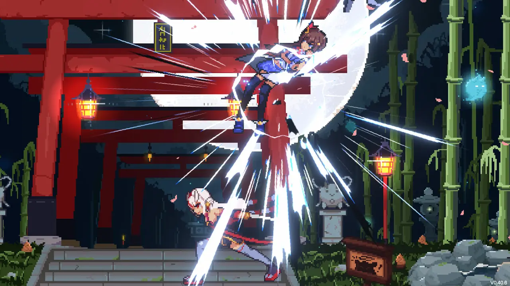

Idol Showdown
A free, fan-made hololive fighting game with rollback netcode. It has more than 1.2 million downloads and a 9/10 rating on Steam.
As a systems programmer at Besto Games I built input handling on SDL and the Wwise audio integration, worked on the UI, wrote debugging and tracking tools inside the Unity Editor, and made a bug tracker that sent designers’ reports straight into our CI/CD pipeline.
- Years
- 2020 to 2024
- Built with
- Unity, C#, C++, SDL, Wwise